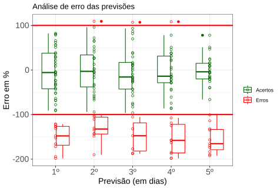

Informações Técnicas
Última revisão em 27 de abril, 2020 (13:30, Horário de Brasília)Entenda os detalhes de como o Observatório COVID-19 gera suas análises.
Entenda os detalhes de como o Observatório COVID-19 gera suas análises.
Índice
Saiba mais sobre a origem dos dados utilizados em nossas análises
Utilizamos os registros das notificações de casos graves de Síndrome Respiratória Aguda Grave (SRAG) e casos de SRAG confirmados para COVID-19 na base SIVEP Gripe. Atualização públicas desta base são divulgadas pelo Ministério da Saúde pelo portal Open Data SUS. A cada atualização na plataforma um programa automático de recuperação de dados nos envia os novos registros e dispara a atualização das análises e gráficos neste site.
Compilação de dados de COVID do Brasil.IO
Portal sobre Coronavírus da FIOCRUZ
Jonh Hopkins Coronavirus Resource Center
Site sobre epidemia de COVID-19 da Organização Mundial da Saúde
CMMID COVID repository, Centre for Mathematical Modelling of Infectious Diseases, London School of Hygiene and Tropical Medicine.
No início das epidemias o número de infectados cresce exponencialmente, o que implica que o tempo para que o número de casos duplique é constante em \(\ln(2)/r\), onde \(r\) é a taxa de crescimento de número de casos. Um crescimento exponencial a taxa constante também implica em uma relação linear entre o logaritmo do número de casos e o tempo. Essa expectativa em geral vale para pequenos intervalos de tempo, na fase inicial de epidemias. É o que vemos para o Brasil, por exemplo, nos cincos dias a partir do dia em que o número de casos chegou a 15 (gráfico ao lado)
A linha reta no gráfico mostra o previsto por um modelo linear em escala log para dados de contagem¹, ajustado a estes dados. Esse modelo estima o valor da taxa de crescimento da epidemia neste período (\r\), com a qual estimamos o tempo de duplicação.
Com o modelo linear ajustado estimamos o número de casos para os próximos dias, e os intervalos de confiança dos valores previstos (gráfico ao lado).
ln do n de casos de COVID-19 no Brasil, entre 07 e 12 de março de 2020
A extensão da reta de regressão está abaixo dos pontos do número de casos dos próximos cinco dias. Isso mostra que o coeficiente de crescimento exponencial pode variar mesmo na fase inicial da epidemia, o que torna extrapolações de longo prazo muito sujeitas a erros. Apesar disso, o intervalo da previsão do modelo incluiu os números de casos dos cinco dias seguintes, mostrando que essa regressão é útil para fazer previsões de curto prazo.
Última atualização: 05/04/2020
Estamos há 20 dias no ar fazendo previsões do número de casos confirmados para os próximos 5 dias. Fizemos, neste momento, uma análise de nossas previsões. Para tanto, contruímos um histograma da diferença entre o valor predito e o valor observado, dividida pelo intervalo de confiança do valor predito. Isso significa dizer que o valor observado ficou dentro do intervalo de confiança de valor previsto caso ele apareça entre +100% ou -100%. Indicamos esses limites como linhas horizontais em vermelho.
ln do n de casos de COVID-19 no Brasil, entre 07 e 12 de março e valores previstos de 12 a 16 de março de 2020.
Os pontos em verde são as previsões acertadas, enquanto que os pontos em vermelho indicam as previsões erradas. Na previsão do dia seguinte, acertamos aprox. 91% das vezes (20 acertos em 22 previsões). Na previsão para dois dias à frente, acertamos aprox. 86% das vezes (18 acertos em 21 previsões). Já nas previsões para três, quatro e cinco dias à frente, acertamos 80%, 68% e 72%, respectivamente.
Podemos observar que os erros ocorreram especialmente na última semana (25~29/03), quando ocorreu um grande aumento no tempo de duplicação dos casos confirmados. É notável também que nosso modelo sempre sobrestima quando erra, i.e., prevemos um número maior do que observado quando erramos. Isto é provavelmente relacionado com o fator de subnotificações e atrasos nas notificações.
Para avaliar o quanto o crescimento da epidemia varia ao longo do tempo, ajustamos o modelo linear para períodos de cinco dias, a partir de quando foram registrados 15 casos. Estimamos o tempo de duplicação e o respectivo intervalo de confiança para cada um desses modelos. Assim, a primeira estimativa é para o período de 07 de março a 12 de março. A segunda é para o período de 08 de março a 13 de março e assim sucessivamente. A tabela ao lado exemplifica os resultados obtidos para os primeiros 10 dias a partir do dia com 15 casos:
Em epidemiologia, uma das medidas mais importantes é o número reprodutivo basal ou razão de reprodução básica (\(R_0\)). Essa medida indica o número de casos secundários que um indivíduo infeccioso pode gerar em uma população totalmente suscetível. Apesar de ser muito útil para avaliar o potencial de propagação de doenças infecciosas em diferentes contextos, \(R_0\) é uma medida teórica. Com a propagação de doenças infecciosas com altas taxas de transmissibilidade, muitas pessoas se infectam e, em diversos casos, indivíduos que já foram infectados podem tornar-se resistentes, não pertencendo mais ao grupo de suscetíveis. Neste momento, a premissa de uma população totalmente suscetível passa a não ser mais uma boa aproximação da realidade e uma nova medida epidemiológica faz-se necessária. Essa medida é o número reprodutivo efetivo ou razão de reprodução efetiva (\(R_e\)). Esse número indica o número de casos secundários produzidos em uma população na qual nem todos são suscetíveis.

Para analisar a dinâmica instantânea de uma doença infecciosa que tem potencial de infectar grande parte da população, o valor de \(R_e\) calculado ao longo do tempo pode informar o quão crítico é o atual estágio de uma epidemia. Podemos calcular o \(R_e\) utilizando séries temporais de dados de incidência (novos casos a cada dia, semana, etc) e a distribuição do intervalo serial, definido como o intervalo de tempo entre o início da doença em um caso primário e o início da doença em um caso secundário. O intervalo serial é uma medida difícil de ser obtida, principalmente para doenças infecciosas com pouco estudo epidemiológico. Para contornar esse problema, pode-se estimar o valor de \(R_e\) considerando incertezas na medida do intervalo serial.
Usamos a série temporal de casos de SRAG da epidemia de COVID-19 para estimar os valores de \(R_e\) a cada dia, utilizando a metodologia de Cori et al (2013) e implementada no pacote EpiEstim do software R (Cori 2020). Para a medida de intervalo serial, utilizamos uma distribuição log-normal truncada com média 4.8 (IC 95%, 3.8 - 6.1) e desvio padrão 2.3 (IC 95%, 1.6 - 3.5) em conformidade com o estudo Nishiura et al. (2020).
Para calcular uma estimativa do número de casos graves a cada semana epidemiológica, utilizamos os dados de notificação de hospitalizações por SRAG (Síndrome Respiratória Aguda Grave) da base SIVEP-Gripe, para o município de São Paulo. É nesta base que são notificados os casos graves suspeitos de COVID-19, que são os casos SRAG hospitalizados. Cada um desses casos deve ser investigado para confirmação ou não como caso de COVID-19.
A este conjunto de dados é aplicada uma técnica estatística Bayesiana de nowcasting, um método que corrige os atrasos do sistema de notificação vigente, isto é, adianta-se as notificações oficiais futuras pelo tempo médio entre a ocorrência dos primeiros sintomas no paciente e a hospitalização, quando há o registro dos seus dados no sistema de vigilância.
Esse tempo abrange várias etapas: desde procurar um hospital, coletar o exame, o exame ser realizado e o resultado do teste positivo para Covid-19 estar disponível para ser incluído no banco de dados. O tempo acumulado entre essas etapas do processo causa atrasos de vários dias entre o número de casos confirmados no SIVEP-Gripe e os casos ainda não disponíveis no sistema, que são compensados somando aos casos já confirmados uma estimativa de casos que devem ser confirmados no futuro. O método que usamos foi proposto por McGough et.al. (2020) e implementado usando o pacote NobBS do R (McGough et.al. 2020).
Essa não é uma estimativa do número total de pessoas infectadas pelo novo coronavírus, apenas de casos graves hospitalizados e notificados no sistema de vigilância. Isso porque os casos notificados oficialmente diferem do número de casos reais na mesma data tanto por atrasos de notificação (corrigidos pelo nowcasting) quanto por subnotificação (corrigida por outros métodos). Uma das razões da subnotificação é o próprio modelo de vigilância. No Brasil, por exemplo, nem todos os possíveis infectados são testados, então os casos leves e casos assintomáticos não são detectados pela base de dados do SRAG ². No caso de transmissão comunitária, como temos hoje, seria necessário testar toda a população para eliminar a subnotificação. Hoje, no Brasil, o protocolo assegura exames prioritariamente para casos graves (hospitalizações), profissionais da saúde e óbitos.
Créditos: Observatório COVID-19 BR em parceria com o Grupo Técnico de Assessoramento em Epidemiologia e Modelagem Matemática COVID19 (SMS SP), composto por Ana Freitas Ribeiro (medica sanitarista @ IIER – professora Uninove e USCS, CV), Hélio Neves (medico sanitarista @ SMS-SP – professor FCMSCSP, CV ), José Olimpio Moura de Albuquerque (medico sanitarista @ COVISA SMS-SP), Karina de Cassia Braga Ribeiro (professora @ FCMSCSP, CV ), Maria Amélia de Sousa Mascena Veras (professora @ FCMSCSP, CV ), Paulo Carrara de Castro (professor @ FCMSCSP, CV ) e Sylvia Christina de Andrade Grimm (assessora técnica @ CEInfo SMS-SP, CV).